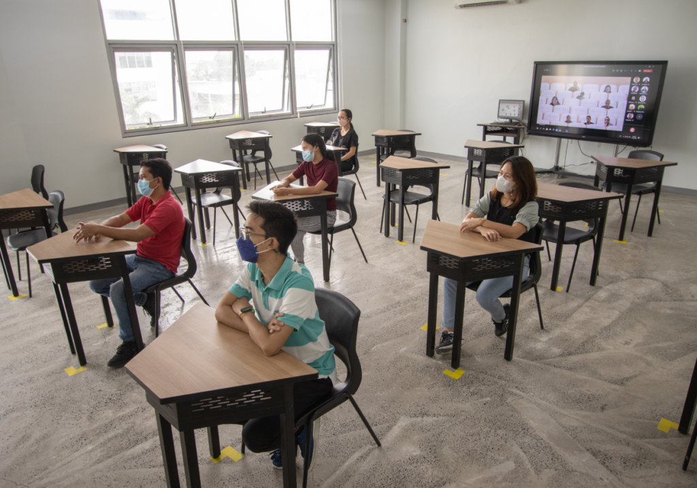
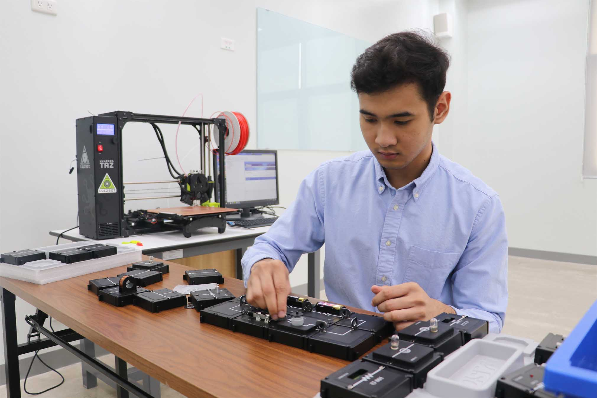
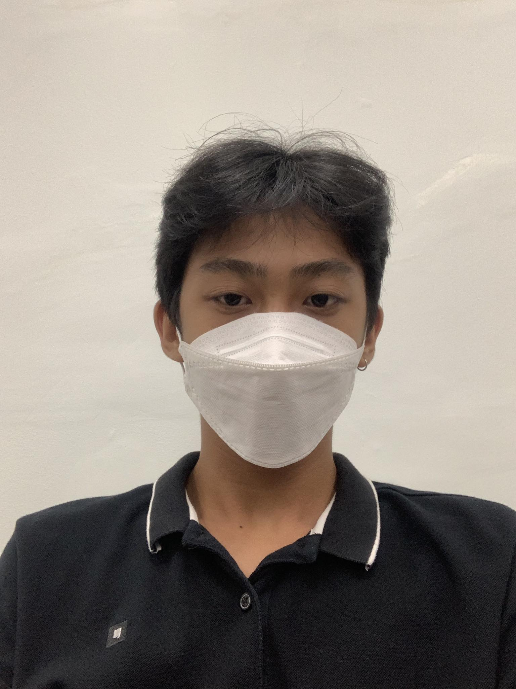
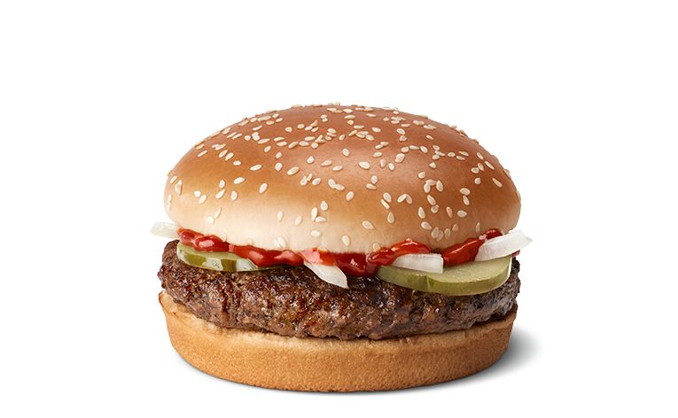

Mapua Malayan Colleges Mindanao
Excellence and Relevance

Effective Learning Spaces
By fusing innovative physical learning spaces and digital learning environments, MMCM provides an inspiring environment to study, learn, and collaborate with peers. MMCM provides WiFi inside the campus, cutting-edge learning resources, and a robust digital learning management system.
College of Engineering and Architecture

College of Engineering and Architecture (CEA) transforms its graduates to become globally competitive, innovative leaders, socially responsible
and result-oriented engineers and architects. MapúaMCM-CEA commits to educate students imbued with good moral and ethical
values while engaging economically viable research and innovation that is relevant locally and beyond.
At CEA, students are primed and supervised by their adept mentors equipping students
with profound knowledge and excellent skill-set through outcomes-based curricula in order
for the students to have access to personalized learning allowing them to perform their best and
achieve their academic and personal goals meeting local and global standards.
This kind of learning environment will upskill students to find state of the art solutions to the
most challenging technological and socio-technological issues of different industries.
About Me
- Danielle Joshua B. Orihuela
- Born in Davao City
- 20 yrs old
- Currently a 3rd year BS CpE student
- Loves to play basketball and computer games
Favorite Food
Quarter Pounder
Humba
Ice cream